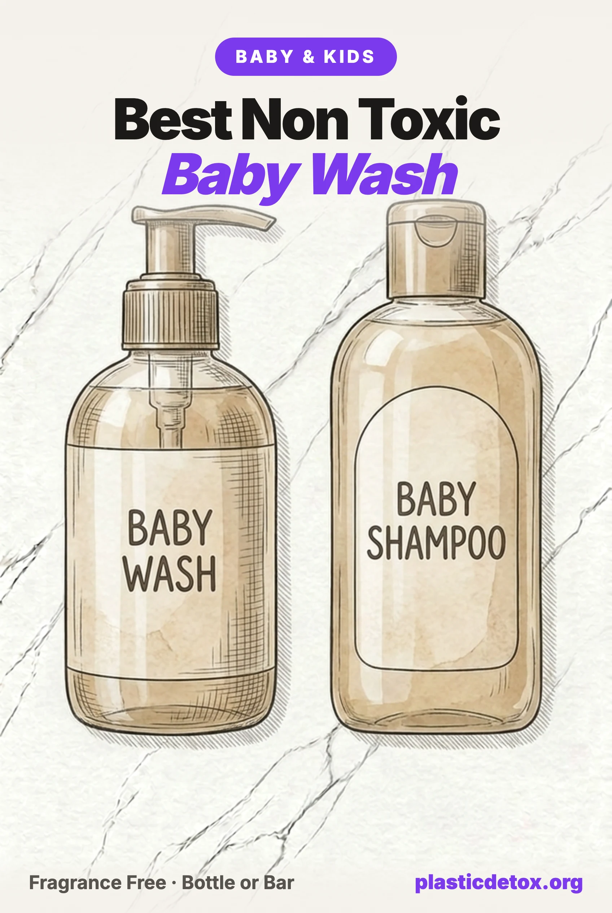

Best Non Toxic Baby Wash and Shampoo: What Newborn Skin Actually Needs (2026)

The 30 Second Summary
- A newborn is not a small adult. An infant's outer skin layer is about 30 percent thinner than yours, its surface pH takes weeks to settle, and in a 2008 study of 163 infants, shampoo and lotion use tracked with higher phthalate levels, most strongly under eight months.
- The bottle matters less than the label, and the label matters less than the frequency. Pediatric guidance is three baths a week, under ten minutes, water for most of it. Whatever wash you buy, the biggest exposure cut is using less of it.
- Four things to refuse. Undisclosed fragrance, formaldehyde releasing preservatives, ethoxylated ingredients (PEG, the suffix eth, polysorbate) that carry 1,4 dioxane, and synthetic polymer thickeners. The current Johnson's, Aveeno, Cetaphil and Aquaphor washes each still carry at least two of the four.
- Our top pick is the Babo Botanicals Sensitive Baby fragrance free 2 in 1. EWG Verified, no fragrance, essential oils, ethoxylates or polymers, and 4.7 stars across about 2,800 reviews, the best rating of any wash that cleared all four checks.
- The range that passed. The ATTITUDE Baby unscented 2 in 1 is the value pick, the California Baby Super Sensitive is the allergen free purist, the Evereden fragrance free wash has the shortest surfactant list, the Mustela Stelatopia cleansing gel is the eczema prone skin pick, and the Babo fragrance free wash bar is the one with no plastic at all.
Why a Newborn Is Not a Small Adult
Most of what we cover enters through the mouth. Baby wash is the rare category where the route is the skin, and infant skin differs from yours in ways that matter for every ingredient in the bottle.
Infant skin is thinner: imaging of children aged 3 to 24 months found the stratum corneum, the outer barrier, about 30 percent thinner than their mothers' and the epidermis 20 percent thinner. It is also less acidic. Adult skin sits near pH 4 to 6, which helps it resist microbes and hold its lipids. A newborn's surface measures about pH 7.0 two hours after birth, 6.6 by the next morning and 5.4 by day seven, and bathing temporarily reversed that drop. The barrier keeps maturing through the first year.
Ingredients behave differently on that skin. In 2008 a University of Washington team measured nine phthalate metabolites in the urine of 163 infants and asked parents what they had used in the previous 24 hours. Lotion use predicted two metabolites, powder one, and shampoo use predicted monomethyl phthalate. Levels rose with the number of products, and the associations were strongest under eight months. Phthalates are not listed on any baby wash. They ride in with fragrance, which is why fragrance is first on our refuse list.
The Toxic Tub, and What Changed
The reputation dates to March 2009, when the Campaign for Safe Cosmetics sent 48 children's bath products to an independent lab. No More Toxic Tub found 1,4 dioxane in 32 of 48 products and, among the 28 also tested for formaldehyde, formaldehyde in 23. Seventeen contained both. Johnson's Baby Shampoo tested at 200 to 210 ppm formaldehyde, released by its preservative quaternium 15. Neither chemical appears on a label: formaldehyde is released over time by certain preservatives, and 1,4 dioxane is a byproduct of ethoxylation, the step that makes a harsh surfactant mild.
It worked. Johnson and Johnson committed in November 2011 to remove formaldehyde releasers from its baby products worldwide and cut 1,4 dioxane below 4 ppm, and delivered by the end of 2013. A 2019 formaldehyde finding by an Indian state regulator was reversed by the national lab three months later. The worst chemistry of 2009 is mostly gone from the mainstream shelf.
What replaced it is the current problem: mainstream washes kept undisclosed fragrance and the ethoxylated ingredients that produce 1,4 dioxane, and several added synthetic polymer thickeners. The contamination data went quiet rather than clean. In 2018 the FDA surveyed 82 children's bath and hair products, found 1,4 dioxane in 47, two over 10 ppm, and never published the names. New York set the first hard limit, 1 ppm for anything that cleans skin or hair, from the end of 2023, and its waiver filings are the only named data: Galderma disclosed 1.1 ppm in Cetaphil Baby Wash, and two kids' shampoos filed at 2.5 and 2.8 ppm. The waivers expired at the end of 2025. Elsewhere the FDA monitors 1,4 dioxane and does not regulate it.
The Four Checks We Run on Everything
Every verdict on this site, from the Product Check tool to the Top 100, comes from the same four checks. Here the first carries most of the weight, the second is a stated trade off, and the third turned up almost nothing, which is itself a finding.
Check 1: The Label Decoder
A baby wash is water, a few surfactants, a preservative, a thickener, and whatever the brand adds for the shelf. The safety question is which surfactants, which preservative and which thickener.
Fragrance. "Fragrance" or "parfum" is a legal umbrella for a mixture that can run to dozens of components, and it is where phthalates, used as scent fixatives, entered baby products. US law does not require the components to be listed; the allergen labeling rule Congress ordered in 2022 was due in June 2024 and has not appeared. Europe now requires more than 80 allergens to be named. We cannot check what we cannot see, so undisclosed fragrance caps any product at careful in our Product Check, and nothing carrying one is a pick.
Read the back, not the front: one "fragrance free" wash we reviewed lists oregano and thyme oil, one "unscented" wash lists lavandin oil, and one ends its fragrance free label with "plant derived fragrance." Named essential oils break no rule of ours, and geraniol, linalool and limonene remain among the most common allergens in patch tested children, so no scented wash is a newborn pick here.
Ethoxylation and 1,4 dioxane. The gentlest sounding ingredients on a mainstream label are often ethoxylated: PEG 80 sorbitan laurate, sodium laureth sulfate, polysorbate 20, laureth 4, sorbeth 230. Ethoxylation reacts a raw material with ethylene oxide to make it milder, and leaves 1,4 dioxane behind, which California lists as a carcinogen and the FDA has asked makers to strip out since the 1980s without setting a limit. The tells are PEG, PPG, the suffix eth, polysorbate and sorbeth. We screen laundry detergent for the same chemistry. A baby wash does not need any of it: glucosides, isethionates, glutamates and sultaines are made without ethylene oxide, and every pick below uses those.
Formaldehyde releasers. DMDM hydantoin, quaternium 15, imidazolidinyl urea, diazolidinyl urea and sodium hydroxymethylglycinate preserve a product by slowly releasing formaldehyde. They were the 2009 story and remain legal in the US. We found none in the current baby washes we reviewed, Johnson's included. They persist in some kids' and tear free lines, so the check stays.
Synthetic polymers. The plastics check. Acrylates copolymer, acrylates/C10-30 alkyl acrylate crosspolymer, carbomer and styrene/acrylates copolymer are petroleum polymers that thicken a wash or make it pearly. The EU's 2023 microplastics restriction phases solid polymer particles out of rinse off cosmetics by October 2027, and pearlizing styrene/acrylates copolymers are what it was written to catch; styrene is also on our hazard list, so a wash carrying one fails our formula check.
The water swellable thickeners, acrylates crosspolymer and carbomer, and film formers like polyquaternium 7 and 10 fall outside both, so on their own they fail nothing. We still do not feature them. Xanthan gum and salt thicken a wash perfectly well, and three of the biggest fragrance free washes, Baby Dove, CeraVe Baby and Aveeno's newborn wash, chose a polymer instead.
What we do not flag. Cocamidopropyl betaine is a documented contact allergen (allergen of the year, 2004), not a toxin, so it is a caveat rather than a fail. Phenoxyethanol is restricted in France on the diaper area of children under three, but only in leave on products; we prefer washes without it and do not fail one for it. Sodium coco sulfate is a sulfate whatever the front label says: coconut derived, not ethoxylated, harsher than a glucoside, and not a hazard. A verdict here has to rest on a written rule.
The same goes for ethoxylates: the 1,4 dioxane they can carry is a contamination risk, not a listed ingredient, so a PEG alone does not fail a product in Product Check. It keeps the product off this page, because every pick manages without one.
The pH Question: Soap Versus Syndet
There is a second axis no certification captures, and it is the one pediatric dermatologists care about most. True soap, including every castile, is alkaline, around pH 9 to 10. A syndet, a synthetic detergent wash, can be made at pH 5.5, where mature skin settles. The European Round Table on infant skin care recommends liquid cleansers at pH 5.5 to 7 over soap, because alkaline soap strips the skin's moisturizing factor and lipids. A 1997 study measured the difference in infants aged two weeks to 16 months:
Alkaline soap raised skin pH by 0.45 units against 0.19 for water and removed about five times more surface fat, while the pH 5.5 cleansers were indistinguishable from water on both. An eight week trial in 64 newborns found a pH appropriate wash gel twice a week did no harm to barrier development. The science does not say avoid cleansers. It says avoid alkaline ones on a newborn, and use a mild one sparingly.
That is the tension, because the cleanest labels in the category are castile soaps: water, saponified organic oils, citric acid, vitamin E. Our resolution follows the evidence. A fragrance free castile is a good choice for a toddler, the household, and hands and the diaper area at any age. For a newborn's bath we chose pH balanced syndets built on glucosides and isethionates, and each card says which is which.
Check 2: The Bottle
Nearly every liquid baby wash comes in a plastic bottle with a plastic pump, and we rate that honestly rather than imply a shelf of glass exists. Our packaging rule scores what the contents pull out of the polymer: water pulls little, oils the most, surfactants in between. A body wash in a PET bottle scores one step worse than a water based toner in the same bottle, then earns the step back because it is rinsed off within a minute. Net: a plastic bottle of fragrance free wash passes our packaging check, and no liquid pick here is plastic free.
One brand sells a concentrate for a refillable stainless steel pump bottle, the only plastic free liquid system we found, and scents it with lavender oil, so it sits in the caution list. The product that leaves plastic out is a bar in paper: no water shipped, months of use, no pump. The catch is pH, because most bars are soap. We found a syndet bar, the same isethionate chemistry as the liquid picks, fragrance free and EWG Verified, in a cardboard box. It is the zero plastic pick below. For a castile household, the Dr. Bronner's unscented bar in its paper wrap is the plastic free soap, pH trade off included.
Check 3: Who Has Actually Tested Baby Wash
This is the finding we did not expect. For sunscreen, diaper cream and wipes we could lean on Lead Safe Mama, Consumer Reports and Mamavation lab results. For baby wash there is almost nothing: Lead Safe Mama has tested no washes, Consumer Reports' 2026 baby products round covered wipes, lotions, bottles and pacifiers, Mamavation's shampoo guide is an ingredient review, and Valisure's benzene work covered sunscreen, dry shampoo and hand sanitizer. We found no US watchdog lab test of a named baby wash or shampoo for 1,4 dioxane, formaldehyde, heavy metals, benzene or PFAS since 2015. The last one is the 2009 report.
What exists: the FDA's anonymised 2018 survey, the New York waiver disclosures, and Germany's Öko-Test, which lab tested 22 baby wash gels in December 2024 and found no synthetic microplastics in any, though the brands are European. So read EWG Verified and MADE SAFE for what they are: an independent audit of the label against a restricted substances list, which rules out fragrance, formaldehyde releasers and ethoxylates by design. It is the strongest credential in this category, and it is not a measurement of what is in the bottle. If a watchdog tests this category, we will update this article the week it publishes.
| What exists | Who | What it found |
|---|---|---|
| 48 baby bath products, 1,4 dioxane and formaldehyde | Campaign for Safe Cosmetics, 2009 | 67% dioxane, 82% formaldehyde, 61% both |
| 82 children's bath and hair products, 1,4 dioxane | FDA, 2018 | Detected in 47; 2 over 10 ppm; no names |
| Manufacturer waiver filings under the 1 ppm limit | New York DEC, 2023 to 2025 | Cetaphil Baby Wash 1.1 ppm; two kids' shampoos 2.5 and 2.8 |
| 22 baby wash gels, formaldehyde, allergens, microplastics | Öko-Test (Germany), 2024 | 16 top rated; no synthetic microplastics found |
| Named US baby wash, heavy metals, PFAS or benzene | Any watchdog, 2015 to 2026 | None found |
Check 4: Recalls and Lawsuits
Recalls here are about bacteria, not chemistry. A wash is mostly water with a mild preservative, and when the preservative fails the product grows things. Saje's Splish Splash baby wash was recalled across Canada in 2018 for Pseudomonas aeruginosa after 16 reports; Babyganics in 2022 and Honest in Canada in 2021 each recalled two lots of bubble bath for Pluralibacter gergoviae; a hospital newborn wash was recalled in Canada in December 2025 for Klebsiella. None touched a product we recommend. The lesson: a preservative free wash is not a virtue, and a properly preserved wash used within a few months is the safe design.
The lawsuits are about the word natural. Honest paid 1.55 million dollars in 2017 over "SLS free" claims, Babyganics settled over "mineral based" and "natural" marketing, and Johnson and Johnson's talc litigation, about baby powder rather than shampoo, runs into 2026 with billions in verdicts and a bankruptcy plan rejected three times. A marketing settlement is not a contamination finding. It does go on the brand record, because we read a company's "free of" claims more carefully once it has paid to settle claims about what "free of" means.
Our Picks
Every pick passed the same four checks: a complete published label with no fragrance, formaldehyde releaser, ethoxylate or synthetic polymer; packaging rated honestly; whatever independent credential exists; and an adversarial search for recalls, lawsuits and complaint clusters. All Amazon picks were in stock and buyable on the day we published. Among products that pass, owner reviews decide the top pick.

Babo Botanicals Sensitive Baby Fragrance Free 2 in 1
EWG Verified syndet wash: taurate, olefin sulfonate and isethionate surfactants, shea butter and calendula, benzoate and sorbate preservatives. 100% recycled plastic bottle, 8 oz. 4.7 stars, about 2,800 ratings.
View →
ATTITUDE Baby 2 in 1 Shampoo and Body Wash, Unscented
EWG Verified, 14 ingredients: sodium coco sulfate, coco glucoside and isethionate base, benzoate and sorbate. 16 oz pump bottle, 67 oz cardboard refill. 4.6 stars, about 1,700 ratings.
View →
Evereden Baby Shampoo and Body Wash, Fragrance Free
EWG Verified, National Eczema Association seal. 16 ingredients: lauryl and decyl glucoside, coco betaine, oat amino acids, gluconolactone, sunflower and avocado oils. 8.5 oz. 4.6 stars, about 1,400 ratings.
View →
Mustela Stelatopia Cleansing Gel
EWG Verified, National Eczema Association seal. 12 ingredients: caprylyl/capryl glucoside, shea butter, rice starch, sunflower unsaponifiables, benzoate and sorbate. Made in France. 6.76 oz. 4.6 stars, about 3,300 ratings.
View →
California Baby Super Sensitive Shampoo and Body Wash
USDA Certified 100% Biobased. Decyl and lauryl glucoside with organic soap bark, basil and anise isolate preservatives. No oat, soy, gluten, dairy or nut ingredients. Made in Los Angeles. 19 oz. 4.6 stars.
View →
Babo Botanicals Fragrance Free Shampoo and Wash Bar
EWG Verified solid syndet bar, 12 ingredients: sodium cocoyl isethionate, polyglyceryl-4 laurate, shea butter, oat flour, calendula. Paperboard box, no bottle or pump. 4.4 stars.
View →Why the Babo leads
Five liquid washes cleared every check, so owner reviews broke the tie. The Babo fragrance free 2 in 1 carries the highest rating, 4.7 stars across about 2,800 ratings; the Mustela Stelatopia has more ratings, about 3,300 at 4.6, close to a draw, so the everyday slot went to the everyday wash and the eczema slot to the cream gel built for it. Babo also publishes the most complete picture: EWG Verified, the full label on bottle and website, pediatrician tested, and made without essential oils as well as fragrance.
Full disclosure, as for everyone: Babo's zinc diaper cream reported lead in 2025 testing, which moved our diaper cream picks; that is lead riding in on zinc oxide, and the wash contains no mineral, so the finding does not transfer. The company settled an "all natural" claims case in 2016 with label changes and no payment, and since 2018 has been owned by Laboratoires Expanscience, which also owns Mustela. Cocamidopropyl betaine sits low on the label, the one ingredient caveat.
The ATTITUDE is the value pick at about half the price per ounce, EWG Verified with 14 ingredients. One wrinkle: its listings say sulfate free while the first surfactant is sodium coco sulfate, a coconut derived sulfate with no ethoxylation, somewhat harsher than a glucoside, which is why it sits at value rather than top.
The Evereden has the shortest surfactant list, preserves with gluconolactone and sodium benzoate, carries the National Eczema Association seal, and uses coco betaine, a true betaine without the sensitizing impurity of cocamidopropyl betaine.
The Mustela Stelatopia is the eczema pick: a 12 ingredient cream gel, EWG Verified and NEA accepted, made in France by a family owned B Corp; Mustela's mainstream Gentle Cleansing Gel is a different formula with fragrance and two PEGs and sits in the caution list.
The California Baby is for families managing food allergies: no oat, soy, gluten, dairy or nut ingredients, glucosides and organic soap bark, basil and anise isolates as the preservative, made in the brand's own plant in Los Angeles. Its Amazon listing shows an older label; we vetted the current one.
The Babo wash bar is a solid version of the top pick's isethionate chemistry: EWG Verified, fragrance free, twelve ingredients, in a box. Its record is thinner, 4.4 stars from about 150 ratings, it contains oat flour, and it needs a draining soap dish because a syndet bar dissolves faster than soap in a puddle. For the classic castile bar, the Dr. Bronner's unscented bar has ten ingredients, a recycled paper wrap, EWG Verified and Regenerative Organic certification, and 7,000 plus ratings at 4.8 stars, with the alkaline pH trade off of every true soap and a sting if it reaches the eyes. Fine for a toddler and the household, not for a newborn's whole body every bath. The liquid version is the same soap in a bottle.
Every brand in this article, picks and cautions alike, now has a current entry in our Product Check tool, with the ingredient list we read and the reason for the verdict. Type any baby wash brand in there for the ten second version.
Brands We Did Not Pick
Most of these are not dangerous. They fail one of the four checks, usually the first, or the stricter standard we hold a newborn pick to, and each card says which. We read every current label rather than relying on 2009.
Johnson's Head to Toe Wash and Shampoo
The formaldehyde releaser is gone. What remains is undisclosed fragrance, three ethoxylates (PEG 80 sorbitan laurate, PEG 150 pentaerythrityl tetrastearate, PPG 2 hydroxyethyl cocamide) and phenoxyethanol: three of our four red flags on the best selling baby wash in America. Since 2009 the record adds a 5 million dollar settlement in 2017 over "clinically proven" sleep claims on the Bedtime line and a 2022 federal suit alleging phthalates in Head to Toe wash sold as phthalate free, closed in 2024 with no public resolution we could find. Johnson's is a skip across the baby line in our Product Check; the talc litigation, about 69,000 cases pending in 2026, is the separate reason.
Aveeno Baby Daily Moisture and Healthy Start
The flagship Daily Moisture wash improves on Johnson's, with glucoside and betaine surfactants and no ethoxylates, but lists fragrance and the thickener acrylates/C10-30 alkyl acrylate crosspolymer. The fragrance free newborn wash, sold as Healthy Start and as Cleansing Therapy, drops the scent and keeps the polymer plus the pearlizer glycol distearate. Johnson and Johnson paid 2.4 million dollars in 2019 over "100 percent naturally sourced" claims on this wash; the 2021 benzene recall was aerosol sunscreen. Careful, not skip: a far better drugstore choice than Johnson's, and the picks above cost about the same.
Cetaphil Baby Wash and Shampoo
Sodium laureth sulfate, disodium laureth sulfosuccinate, PEG 120 methyl glucose dioleate and laureth 4, plus fragrance, heliotropine, phenoxyethanol and glycol distearate. Cetaphil is the one brand with a public 1,4 dioxane number: Galderma's New York waiver disclosed 1.1 ppm in this product, just over the limit that now applies there. Not a scandal, the only maker honest enough to file, and exactly the chemistry the decoder says to avoid. A 2024 California Proposition 65 notice over diethanolamine in Cetaphil Baby Body Wash settled with a commitment to reformulate or warn.
Baby Dove, CeraVe Baby, Aquaphor and Eucerin Baby
Four fragrance free washes that miss on polymers or ethoxylates. Baby Dove's 34 ounce Fragrance Free Moisture lists acrylates/C10-30 alkyl acrylate crosspolymer and tetrasodium EDTA; its Sensitive Moisture Tip to Toe label lists styrene/acrylates copolymer, polyacrylate 33, phenoxyethanol and titanium dioxide, and styrene is on our hazard list, so that version is a skip. CeraVe Baby lists carbomer and disodium EDTA on an otherwise thoughtful ceramide formula. Aquaphor Baby and Eucerin Baby share one Beiersdorf formula with sodium myreth sulfate, PEG 200 hydrogenated glyceryl palmate and polyquaternium 10, under an Aquaphor "preservative free" claim above a label listing sodium benzoate. All three companies know how to thicken a wash with gum and salt.
Weleda Calendula Shampoo and Body Wash, Mustela Gentle Cleansing Gel
Weleda's baby wash is certified natural, sesame and almond oil with glucoside and glutamate surfactants, and lists "fragrance (parfum)" plus nine named essential oil components including geraniol, limonene and linalool. Disclosed allergens beat hidden ones, and it is still a fragrance umbrella on a newborn product, so careful; Weleda makes no unscented wash. Mustela's Gentle Cleansing Gel fails the same check and adds cocamidopropyl betaine, sodium myreth sulfate, PEG 7 glyceryl cocoate and PEG 150 distearate. The same company's fragrance free Stelatopia is our eczema pick, so the difference is a choice, not a capability.
The Honest Company, Babyganics, Hello Bello
Honest's fragrance free wash has a good label, EWG Verified with the eczema seal, and 47,000 ratings across its scents. It is not featured because of the record: a 1.55 million dollar "SLS free" settlement in 2017, a reported 7 million dollar "natural" claims settlement the same year, a 2015 wipes mold recall, a 2017 baby powder recall and a 2021 bubble bath bacterial recall in Canada.
Babyganics' foaming fragrance free wash ends its own label with "plant derived fragrance"; the non foaming version is clean, and the brand carries a 2.215 million dollar "natural" settlement that named its shampoo, a 2022 bubble bath recall and a 2025 sunscreen recall of about 943,000 units.
Hello Bello's fragrance free wash lists sorbeth 230 tetraoleate, an ethoxylate; a 2024 "hypoallergenic" class action closed in 2025 with no public resolution, and the company went through Chapter 11 in 2023. A featured pick needs a clean adversarial screen as well as a clean label.
Burt's Bees Baby Sensitive, Everyone Unscented, Tubby Todd
Burt's Bees Baby's fragrance free shampoo lists oregano and thyme oil, two potent sensitizers, plus phenoxyethanol; the brand's diaper ointment reported lead in 2025 testing. Everyone's unscented 3 in 1 lists lavandin oil, phenoxyethanol and benzyl alcohol. Tubby Todd's fragrance free wash carries the eczema seal and lists disodium laureth sulfosuccinate, an ethoxylate, with cocamidopropyl betaine; its diaper paste reported lead, and the brand settled a 2023 Proposition 65 case over DEHP in a vinyl travel bag. None fails a written rule on the wash itself. Each misses the standard for a newborn pick, and the label says where.
Pipette, HealthyBaby, Earth Mama, Vanicream, Little Twig, Noodle & Boo, Puracy
Pipette's fragrance free wash was our earlier pick and its 13 ingredient squalane and glucoside formula is still excellent, but parent Amyris went through Chapter 11 in 2023, the brand was sold at auction, its Amazon presence is bundles and one 33 ounce listing with almost no reviews, and the EWG Verified mark no longer appears on its site; we will bring it back when that settles.
HealthyBaby's concentrate and stainless pump bottle is the one plastic free liquid system we found, EWG Verified and MADE SAFE, scented with lavender oil. Earth Mama's Simply Non Scents castile wash has nine organic ingredients and the eczema seal; it is alkaline, and the brand sits at careful over its sunscreen's 2,140 ppb lead result. Vanicream's gentle wash lists acrylates copolymer, mica and titanium dioxide. Little Twig's unscented wash leads with cocamidopropyl betaine and is otherwise clean. Noodle & Boo's fragrance free shampoo lists PEG 80 sorbitan laurate and PEG 150 distearate. Puracy makes no fragrance free baby wash.
Free Habits That Lower the Dose
- Water for most of it. The AAP's guidance is three baths a week in the first year, under ten minutes each, and that more frequent bathing dries a baby's skin. A newborn gets clean in warm water; cleanser is for creases, hair two or three times a week, and the diaper area.
- A pea, not a pump. Every study in this article measured what a full wash does to skin pH and lipids. Halving the amount is the cheapest way to halve the effect.
- Rinse, then moisturize within minutes. The AAP says rinse cleanser off right away; the European consensus recommends a fragrance free emollient after the bath. Our balm picks double as a body moisturizer.
- Skip bubble bath entirely. It is a wash left in contact with the skin for the whole bath, and every recall in this category was a bubble bath or a wash that grew bacteria. The pediatric urology concern about bubble bath and irritation in young children is old advice that has not been overturned.
- Read the back, not the front. "Fragrance free" plus essential oils, "sulfate free" plus sodium coco sulfate, "natural" plus a settlement. The ingredient list is the only part of the bottle regulated for accuracy.
- One bottle, used up. A wash that sits open for a year is a wash whose preservative has been working for a year. Buy the size you will finish in a few months, and keep the pump out of the tub water.
Frequently Asked Questions
Do newborns need baby wash at all?
Mostly no. The American Academy of Pediatrics says three baths a week is enough during the first year, that more frequent bathing dries a baby's skin, and that any soap should be mild, neutral in pH, fragrance free and rinsed off right away. Warm water handles most of a newborn's cleaning. A small amount of a mild, fragrance free cleanser is for the creases and the diaper area when water is not enough, and for hair two or three times a week. The single most effective way to lower a baby's exposure to wash ingredients is to use less wash.
What ingredients should I avoid in baby shampoo?
Four things cover most of the risk. Undisclosed fragrance or parfum, because a 2008 Pediatrics study of 163 infants tied baby shampoo and lotion use to higher urinary phthalate levels, strongest under eight months. Formaldehyde releasing preservatives such as DMDM hydantoin, quaternium 15, imidazolidinyl urea and diazolidinyl urea. Ethoxylated ingredients, which you can spot by PEG, the suffix eth as in sodium laureth sulfate, polysorbate and sorbeth, because ethoxylation leaves behind the contaminant 1,4 dioxane. And synthetic polymers such as acrylates copolymer, carbomer and styrene/acrylates copolymer, which are plastic thickeners and opacifiers in a rinse off product.
Is Johnson's Baby Shampoo safe now?
It is better than it was, and still not something we recommend. In 2009 independent testing found the original formula contained both formaldehyde, released by the preservative quaternium 15, and 1,4 dioxane. Johnson and Johnson committed in 2011 to remove formaldehyde releasers from its baby line and to cut 1,4 dioxane below 4 ppm, and delivered the reformulation by the end of 2013. The current Head to Toe wash lists no formaldehyde releaser, but it still carries undisclosed fragrance, three ethoxylated ingredients (PEG 80 sorbitan laurate, PEG 150 pentaerythrityl tetrastearate and PPG 2 hydroxyethyl cocamide) and phenoxyethanol. A fragrance free wash built on glucosides and isethionates has none of those, at a similar price.
Is castile soap safe for babies?
The ingredient list is about as clean as a cleanser gets, and the trade off is pH. Castile is true soap, and true soap is alkaline, around pH 9 to 10, while newborn skin spends its first weeks settling from neutral to a slightly acidic surface near pH 5.5. When researchers cleansed infants with an alkaline soap, skin pH rose by 0.45 units and skin surface fat fell about five times more than with water, while pH 5.5 liquid cleansers barely moved either. The European pediatric consensus therefore recommends liquid cleansers at pH 5.5 to 7 over soap for infants. Our reading: a fragrance free castile is a fine choice for a toddler and a great one for the household, and for a newborn we would keep it for hands and the diaper area rather than the whole body every bath.
Does EWG Verified mean a baby wash has been lab tested?
No. EWG Verified and MADE SAFE are audits of the ingredient list and the manufacturer's disclosure, and they are genuinely useful because they rule out undisclosed fragrance, formaldehyde releasers and a long list of other ingredients. They do not measure what is in the bottle. That matters in this category because contamination is the historical problem: 1,4 dioxane and formaldehyde never appear on a label. As of September 2026 we could find no US watchdog lab test of a named baby wash for 1,4 dioxane, formaldehyde, heavy metals, benzene or PFAS since 2015. The best available data are an FDA survey that found 1,4 dioxane in 47 of 82 children's products, and manufacturer disclosures filed under New York's 1 ppm limit.
What about the plastic bottle?
Nearly every liquid baby wash comes in a plastic bottle, and we rate that honestly rather than pretending a shelf of glass exists. Surfactants do pull additives out of plastic more readily than plain water does, which is why our packaging rule scores a body wash one step worse than a toner in the same bottle. But a wash is diluted and rinsed off within a minute, which earns back that step. The product that leaves plastic out entirely is a bar in paper, and the pick we chose for that slot is an EWG Verified fragrance free wash bar, not an alkaline soap. Bars also ship without water, which is most of what a bottle of baby wash weighs.
Related Articles
- Best Non Toxic Diaper Rash Creams and Baby Balms
Lead in every zinc cream tested, and the one balm that came back clean. - Best Non Toxic Baby Wipes
The other product on a newborn's skin every day, and what Consumer Reports found. - Best Mineral Sunscreen Guide
Why every mineral sunscreen tests positive for lead, and the lowest for kids. - Non Toxic Baby and Toddler Products Guide
The full product by product guide, from bottles to bath time. - Baby and Kids 101
The step by step room detox for families, ranked by impact. - Best Non Toxic Laundry Detergent
The same 1,4 dioxane chemistry, in the product that touches every onesie.